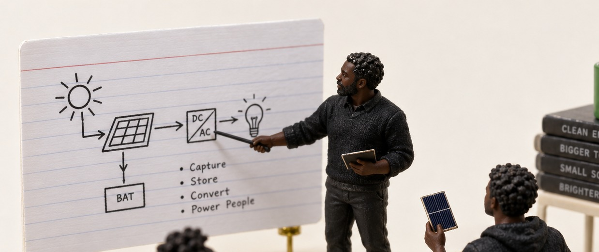

Start with people
Listen to local needs and make room for community knowledge.
What guides us
Energy and security are connected. Learning gives people the tools to understand both.
Our mission
To secure people, power and information.
Our vision
A world where communities can rely on resilient energy, trustworthy information and technology designed with a safety-first culture. We connect energy, security and workforce learning so people can understand these systems, have a say in how they develop and build the skills to shape what comes next.

Our approach
We believe communities should have a voice in the technology that protects them. That means making complex ideas easier to understand, asking clear questions and treating safety as a culture, not a box to check.
Our work connects three lanes: energy, security and workforce development.
Listen to local needs and make room for community knowledge.
Test ideas, understand constraints and build from evidence.
Consider how energy, AI and connected infrastructure affect the physical world.